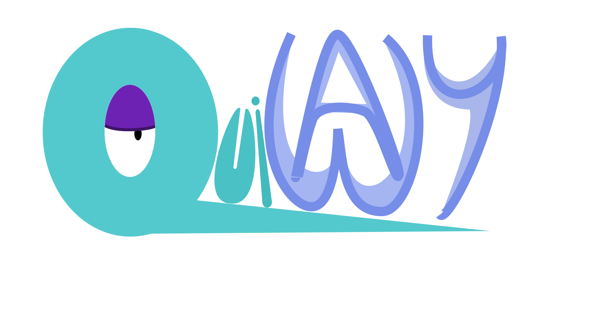

Yousef Neji
The art for me is life...
And it circle through every living and solid thing in our world...
The job is an other type of art, to program for me was a feeling of happiness!
I design
I always loved designing website, well I am not the best yet you may rate me well.
For me, I focused basically on the frontend develoment, And I only give a little for
the backend.
Maybe because I paint good I just had this artistic view over things! And this passion
that push me to fix any little mistakes.
I always count on myself to draw my apps icons and backgrounds.. Kind a have this self-belief!!
I program
Besides Web development since it's mostly designing, I learned python, ruby nodeJs and some arabic
programming language which where new at the time I knew them, such as Alif.
I just was interested in any thing new about programming, And trying all the different languages with their different syntaxes!
I write
Writing is real amazing as it allows you to fly a bit out of usual, to figure some point of your personaltiy
and discover a lot of new points of views for real.
I started writing since I was 10 years old, and I kept so untill I become 15 years old where my mind started to get
lost with a lot of different other stuffs. Then, I had this passion again as I discovered the english language
There I started to talk in english very well, And I take my writing skills a step forward!
And because I was good in painting too, I make this blend of writing and painting to draw my first
cartoonic story when I was 13 year old.
I dance, sing and play piano a bit...
Yeah and I do this couples of stuffs!
also beatboxing!!
Things I've Made
Quiway.js
The JavaScript library was one of my first published libraries to git hub, real
wonderfull shortcut manager for your web app, very easily to use and have couples of
different extra functionalities!
Some functionalities :
Interactive mode: you can create/replace/modify and shortcut right from the end user with the interactive mode.
Combo: the library also support creating combo which mostly used for games.
Full control over shortcuts: you can disable or enable a shortcut/combo replace it or changes.
Key checker: an object held by the instantiated quiway objects holds the different keys state for all different uses!
...
PlayFull Media player
A media player for every movies lover, and as I like to say it :
It doesn't just play your movie it makes you even closer to it
Some functionalities :
Note your media: you can note any movie audio or image so to keep it in mind.
Save best moments: right click the time bar and save any moment you which.
Easy to use: the app kind of a little bit mysterious at the very begin but later
on you will figure how much easy it is!
...
Void Game Engine
The JavaScript game engine for every one!
About to be finished...
Contact

Git Hub